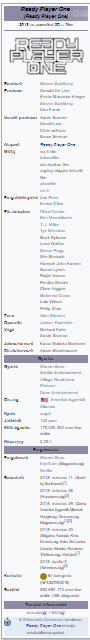

Amikor egy népszerű videójáték rendszer megalkotója meghal, virtuális verseny indul milliárdos vagyonáért. A versenyben a felhasználók ölni is hajlandóak a győzelemért.
Cselekmény
Az Oasis a legnagyobb virtuális tér, melyet az emberek nap mint nap használnak. Miután az alapítója meghal, különös végrendeletet hagy az utókor számára: a játékon belül elrejtett három kulcsot, mellyel meg lehet szerezni egy ún. „húsvéti tojás”-t. Aki mindhárom kulcsot és a tojást megszerzi, azé lesz a játékot birtokló cég vezetése.
Mivel a fődíj rendkívül értékes, az egyik konkurens cég is szeretné megkaparintani. Ők nem a tudásukat, hanem szinte végtelen erőforrásaikat vetik be.
Már öt év telt el, de még egyetlen kulcsot sem sikerült meglelni, csak az első pályát, mely egy autóverseny New Yorkban. A verseny nehéz, rengeteg akadály nehezíti a versenyzők életét, az autósokra hatalmas bontógolyók, dinoszaurusz, óriási gorilla is rátámad, az úton végigmenni lehetetlen. Egy fiatal és szegény játékos (akinek avatárja Parsifal) azonban talál egy rejtett föld alatti utat és sértetlenül célba ér. A verseny kulcsát továbbadja barátainak, így öt embernek sikerül célba érnie.
A második kulcs a Ragyogás című film hotelében lett elrejtve, a harmadik pedig az Adventure ATARI videójátékban.